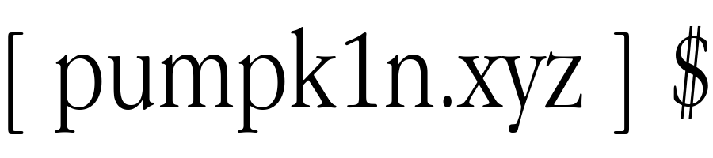

Aspiring IT Project Manager with a strong foundation in cybersecurity, cloud platforms, and data analysis. Skilled in networking, Power BI, and project management, with hands-on experience supporting organizational initiatives.